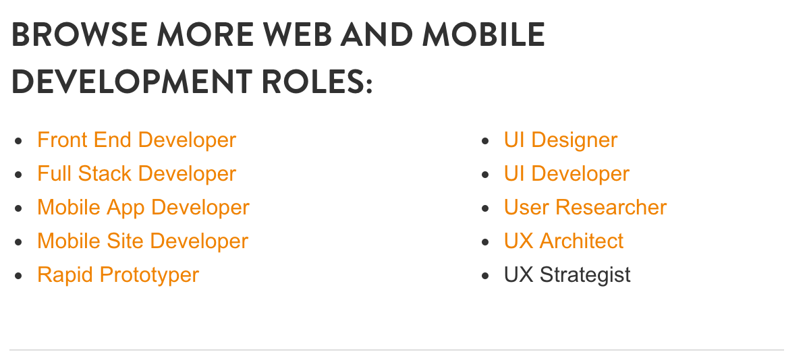

Developing the skills of a creative technologist prepares you for many different jobs. Coming to DT, it becomes more and more difficult to decide what skills to focus on and what path is of greatest interest. I wanted to explore the most commonly required skills across the sorts of jobs that interest me. Creating a data visualization allowed me to see the data and form a plan about what skills would give me the best chance of succeeding in the career paths that interest me post graduation.
Process
To begin I conducted research about what skills were most requested for the types of jobs that appeal to me. I looked at listings on Aquent, an agency that specializes in digital staffing.
 Aquent Job DescriptionsNext I used Tagul to create a word cloud. I sorted the words by how often they appeared, and made the ones that were most prominent larger. I chose the outline of a girl to represent me, and the skills that would make up my professional persona.
Challenges, Constraints, and Criteria
The constraints for the project were that it had to be made up entirely of words. A main goal of the project was to learn how to create data visualizations, so it was crucial that the information was easy to understand. It was challenging to figure out a way to make the information seem more personal however I found that putting the words inside of a silhouette helped make the information seem less abstract.
Were I to take this project further, I would attempt another iteration where underneath the world cloud there would be an actual image of a person. It would be an interesting experiment to see what preconceptions we hold regarding what we think people with certain skills and job descriptions should or would look like.
This was an appropriate final project for my 5 in 5. It was enlightening to look back on the the breadth of projects I was able to create with the new skills that I am learning. It was also informative to compare my current skills with those I would like to acquire when I leave DT. Learning to rapidly build was important, as it is a valuable skill for the creative technologist, and because it allowed me to push myself outside my comfort zone.
As should be expected, the time constraints of these projects influenced their outcome. The biggest surprise to me was the influence of the constraints was more often positive; limiting the scope of a project because of a time constraint eliminated unnecessary distractions and forced me to be more creative with how to design and implement the critical paths of my projects.